(10) leapfrog: (32x2, 64.0x1.0)#
project = iP-VAE, host = chewie, device = cuda:1
Motivation:
Use leapfrog to fit vH16 w/ leared dt. Learned contrast (like that Lengyel paper does not work at all: ugly Gabors)
Show code cell source
# HIDE CODE
import os, sys
from IPython.display import display
# tmp & extras dir
git_dir = os.path.join(os.environ['HOME'], 'Dropbox/git')
extras_dir = os.path.join(git_dir, 'jb-progress-2025/_extras')
fig_base_dir = os.path.join(git_dir, 'jb-progress-2025/figs')
tmp_dir = os.path.join(git_dir, 'jb-progress-2025/tmp')
# GitHub
sys.path.insert(0, os.path.join(git_dir, '_IterativeVAE'))
# from analysis.eval import sparse_score
from figures.fighelper import *
from main.train import *
# warnings, tqdm, & style
warnings.filterwarnings('ignore', category=DeprecationWarning)
warnings.filterwarnings('ignore', category=FutureWarning)
warnings.filterwarnings('ignore', category=UserWarning)
from rich.jupyter import print
%matplotlib inline
set_style()
from figures.analysis import plot_convergence
from figures.imgs import plot_weights
device_idx = 1
device = f'cuda:{device_idx}'
print(f"device: {device} ——— host: {os.uname().nodename}")
device: cuda:1 ——— host: chewie
Trainer#
model_type = 'poisson'
cfg_vae, cfg_tr = default_configs('vH16', model_type, 'leapfrog|lin')
cfg_vae['seq_len'] = 32
cfg_vae['n_iters'] = 2
cfg_vae['track_stats'] = True
cfg_vae['beta_inner'] = 1.0
cfg_tr['kl_beta'] = 64.0
print(f"VAE:\n{cfg_vae}\n\nTrainer:\n{cfg_tr}")
VAE: {'dataset': 'vH16', 'n_latents': 512, 'clamp_prior': -4, 'clamp_du': 10.0, 'clamp_u': 8.0, 'inf_type': 'leapfrog', 'dec_type': 'lin', 'init_dist': 'normal', 'init_scale': 0.0001, 'seq_len': 32, 'n_iters': 2, 'track_stats': True, 'beta_inner': 1.0} Trainer: {'batch_size': 200, 'epochs': 300, 'optimizer_kws': {'weight_decay': 0.0}, 'grad_clip': 200, 'kl_beta': 64.0}
mod = MODEL_CLASSES[model_type](CFG_CLASSES[model_type](**cfg_vae))
tr = Trainer(mod, ConfigTrain(**cfg_tr), device=device)
mod.print()
print(f"{mod.cfg.name()}\n{tr.cfg.name()}_({mod.timestamp})\n")
tr.show_schedules()
+-------------+------------+ | Module Name | Num Params | +-------------+------------+ | IPVAE | 132.9 K | | ——— | ——— | | layer | 132.9 K | +-------------+------------+
poisson_vH16_t-32×2_b-1_z-[512]_<leapfrog|lin> b200-ep300-lr(0.002)_beta(64:0x0.1)_temp(0.05:lin-0.5)_gr(200)_(2025_02_11,09:02)
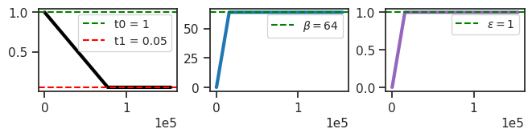
print(tr.model.layer)
PoissonLayer(input_dim=256,latent_dim=512, beta_inner=1, temp=1)
tr.model.layer.log_gamma, tr.model.layer.log_dt
(Parameter containing:
tensor([0.], device='cuda:1', requires_grad=True),
Parameter containing:
tensor([0.], device='cuda:1', requires_grad=True))
tr.model.layer.log_bias.shape, tr.model.layer.log_lr
(torch.Size([1, 512]),
Parameter containing:
tensor([0.], device='cuda:1', requires_grad=True))
cm = 'learned-dt'
tr.train(fit_name=f"{cm}_{tr.cfg.name()}")
# tr.train()
epoch # 300, avg loss: 190.513084: 100%|████| 300/300 [8:04:51<00:00, 96.97s/it]
print(tr.model.layer.n_exp)
tensor([26, 32, 41, 53, 65, 77, 86, 92, 96, 98, 98, 99, 99, 99, 99, 98, 98, 98, 98, 98, 98, 98, 98, 98, 98, 98, 98, 98, 98, 97, 98, 97], device='cuda:1', dtype=torch.int32)
tr.model.layer.log_dt.exp(), tr.model.layer.log_gamma.exp()
(tensor([0.1883], device='cuda:1', grad_fn=<ExpBackward0>),
tensor([2.4957], device='cuda:1', grad_fn=<ExpBackward0>))
u0 = tonp(tr.model.layer.u_init.squeeze())
tr.model.show(order=np.argsort(u0));
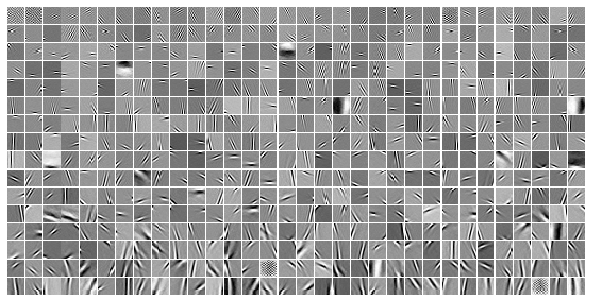
fig, ax = create_figure()
kws = dict(stat='percent', ax=ax)
sns.histplot(tonp(tr.model.layer.log_bias.squeeze().exp()), label='bias', **kws)
# sns.histplot(tonp(tr.model.layer.log_lr.squeeze().exp()), label='lr', **kws)
ax.legend()
plt.show()
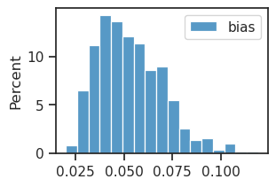
log_scale = tonp(tr.model.layer.log_scale.squeeze())
histplot(np.exp(log_scale) ** 2, label='dec var')
plt.legend();
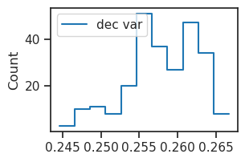
var = np.exp(log_scale) ** 2
var = var.reshape(16, 16)
var_data = tr.dl_vld.dataset.tensors[0].var(dim=0).squeeze()
fig, ax = create_figure()
imshow(var, cmap='Greys_r')
plt.colorbar()
plt.show()
fig, ax = create_figure()
imshow(var_data, cmap='Greys_r')
plt.colorbar()
plt.show()
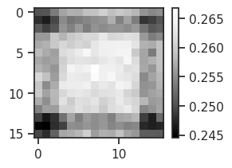
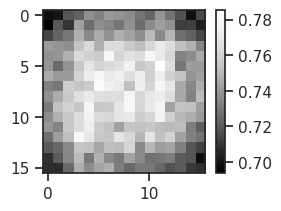
%%time
kws = dict(
seq_total=10000,
seq_batch_sz=1000,
n_data_batches=10,
)
results = tr.analysis('vld', **kws)
_ = plot_convergence(results, color='k')
100%|█████████████████████████████████| 10/10 [07:17<00:00, 43.72s/it]
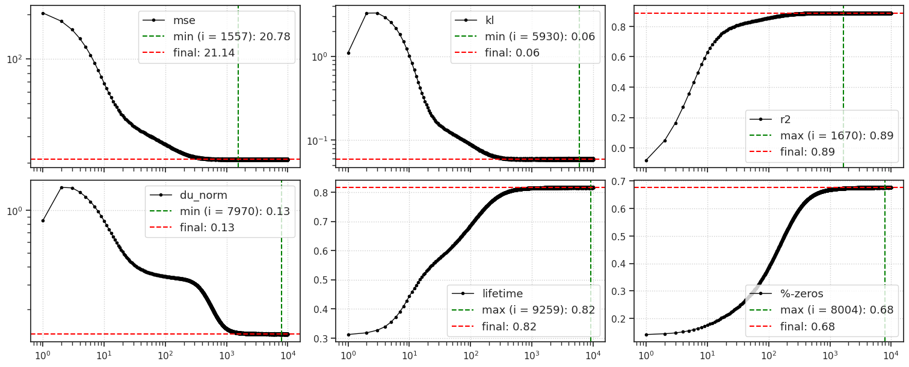
CPU times: user 7min 54s, sys: 23.7 s, total: 8min 18s
Wall time: 8min 18s
output#
%%time
output = tr.model.xtract_ftr(
feeder=tr.get_feeder(),
seq=range(1000),
return_extras=True,
).stack()
print(list(output))
['loss_kl', 'loss_recon', 'posterior', 'du', 'u', 'v', 'recon', 'samples', 'conditional', 'mse', 'r2']
CPU times: user 3.96 s, sys: 48 ms, total: 4.01 s
Wall time: 4.01 s
u_norm = tonp(torch.linalg.norm(output['u'], axis=-1).mean(0))
v_norm = tonp(torch.linalg.norm(output['v'], axis=-1).mean(0))
r_norm = tonp(torch.linalg.norm(torch.exp(output['u']), axis=-1).mean(0))
fig, axes = create_figure(1, 3)
axes[0].plot(u_norm, label='u', color='r')
axes[1].plot(v_norm, label='v', color='k')
axes[2].plot(r_norm, label='r')
# for ax in axes.flat:
# ax.set(xscale='log', yscale='log')
add_legend(axes)
plt.show()
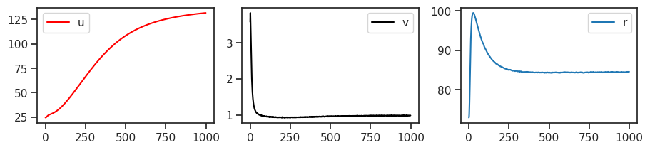
fig, axes = create_figure(1, 3)
axes[0].plot(u_norm, label='u', color='r')
axes[1].plot(v_norm, label='v', color='k')
axes[2].plot(r_norm, label='r')
for ax in axes.flat:
ax.set(xscale='log', yscale='log')
add_legend(axes)
plt.show()
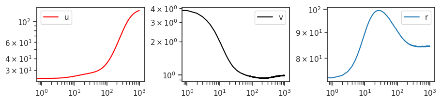
feeder = tr.get_feeder()
locs = torch.stack([
p.loc for p in
output['conditional'].values()
], dim=1)
mse = (locs - feeder[0].unsqueeze(1)).pow(2).sum(-1)
plot(mse.mean(0))
plt.yscale('log');
mse.mean(0)[-5:]
tensor([20.6761, 20.7060, 20.8861, 20.6027, 20.7132], device='cuda:1')
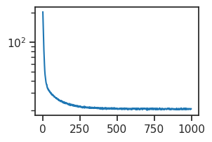
num = 20
n_timepoints = 40
x2p = tonp(locs)[:num]
x2p = x2p[:, :n_timepoints]
true = tonp(feeder[0][:num].unsqueeze(1))
x2p = np.concatenate([x2p, np_nans(true.shape), true], axis=1)
x2p = x2p.reshape(tr.model.cfg.shape)
x2p = x2p.squeeze()
_ = plot_weights(x2p, nrows=num)
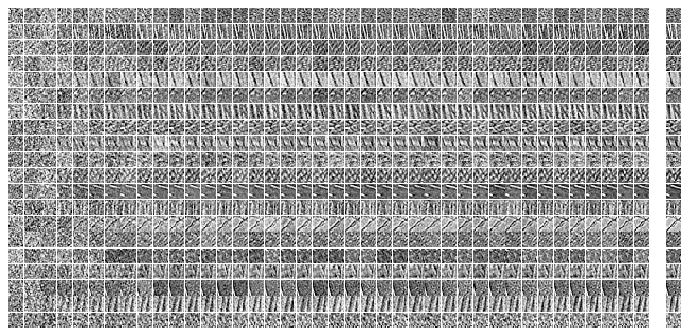
x2p = tonp(output['recon'])[:num]
x2p = x2p[:, :n_timepoints]
true = tonp(feeder[0][:num].unsqueeze(1))
x2p = np.concatenate([x2p, np_nans(true.shape), true], axis=1)
x2p = x2p.reshape(tr.model.cfg.shape)
x2p = x2p.squeeze()
_ = plot_weights(x2p, nrows=num)
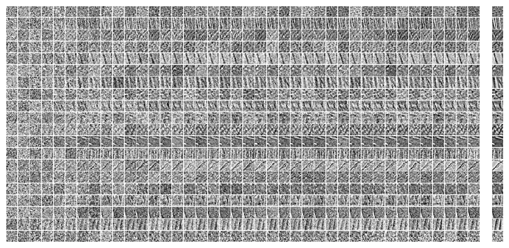